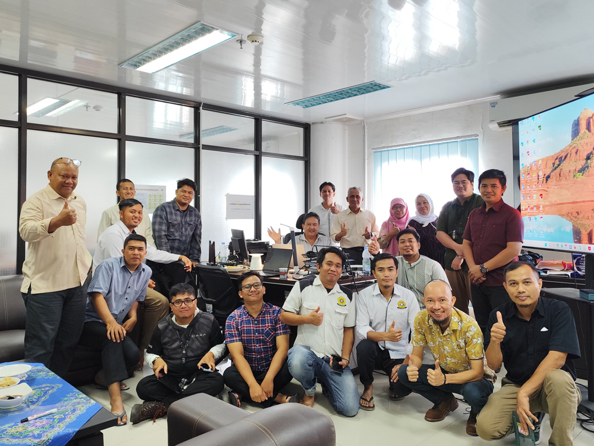

DIREKTORAT PELAYANAN DAN
PENGEMBANGAN TEKNOLOGI INFORMASI
Official Website Direktorat Pelayanan dan Pengembangan Teknologi Informasi
Universitas Sriwijaya

Sejarah Singkat Direktorat PPTI Universitas Sriwijaya
Direktorat PPTI dulunya adalah sebuah unit bernama "Unit PUSKOM" (Pusat Komputer), kemudian berubah menjadi unit adhoc "ICT" dibawah naungan rektor dan dipimpin oleh kepala Unit ICT pada masanya.
Seiring berkembangnya waktu bertransformasi menjadi "Unit Pelaksana Teknis Teknologi Informasi dan Komunikasi" (UPT-TIK). Pada Tahun 2025 setelah Unsri nenjadi PTN-BH UPT-TIK berubah menjadi Direktorat Pelayanan dan Pengembangan Teknologi Informasi (DPPTI).
Berikut Nama-Nama yang Pernah Mimpin Unit ini dari masa kemasa:
- Ir. Muhyin Akip.
- dr. Erial Bahar.
- Prof. Ir. Drs. H. Saparudin, M.T., Ph.D., IPM., ASEAN Eng.
- Dr. Iwan Pahendra, S.T., M.T.
- Dr. Ir. Bhakti Yudho Suprapto, S.T, M.T., IPM.
- Ir. Hendra Martha Yudha, M.T.
- Muhammad Irfan Jambak, S.T, M.Eng, Ph.D.
- Prof. Dipl.-Ing. Ir. Amrifan Saladin Mohruni, Ph.D.
Layanan Kami
Layanan Direktorat PPTI
Helpdesk Layanan TIK
Helpdesk untuk layanan Direktorat PPTI, Direktorat Akademik, Direktorat Kemahasiswaan, dan UPT-Perpustakaan Universitas Sriwijaya
Berita
Berita Terkini

Live Streaming Wisuda Unsri Ke-234
Ini isi berita, cuplikan isi berita, jangan terlalu panjang nanti tidak seru apalagi kalau panjang banget, yah jelek banget jadinya. mending klik baca selengkapnya biar lengkap ....
Live Streaming Wisuda Unsri Ke-234
Ini isi berita, cuplikan isi berita, jangan terlalu panjang nanti tidak seru apalagi kalau panjang banget, yah jelek banget jadinya. mending klik baca selengkapnya biar lengkap ....
Live Streaming Wisuda Unsri Ke-234
Ini isi berita, cuplikan isi berita, jangan terlalu panjang nanti tidak seru apalagi kalau panjang banget, yah jelek banget jadinya. mending klik baca selengkapnya biar lengkap ....
Pimpinan
Pimpinan dan Sub Direktorat

Prof. Dipl-Ing. Ir.Amrifan Saladin Mohruni, Ph.D
NIP / NIDN: 196409111999031002/0011096407Golongan / Pangkat: IV/a Pembina
Jabatan Fungsional: Lektor Kepala
Direktur Direktorat Pelayanan dan Pengembangan Teknologi Informasi Universitas Sriwijaya

Dr. Ahmad Heryanto,S.Kom., M.T.
Kepala Subdirektorat Bagian Pelayanan Infrastruktur Teknologi Informasi
NIP / NIDN: 198701222015041002/0022018703
Golongan / Pangkat: III/c Penata
Jabatan Fungsional: Lektor
Agung Mataram, S.T, M.T, Ph.D
Kepala Sub Direktorat Bagian Pelayanan Aplikasi
NIP / NIDN: 197901052003121002/0027117703
Golongan / Pangkat: IV/a Pembina
Jabatan Fungsional: Lektor Kepala
Dr. Firdaus, S.T., M.Kom.
Kepala Subdirektorat Bagian Pengembangan Teknologi Informasi
NIP / NIDN: 197801212008121003/0221017801
Golongan / Pangkat: III/c Penata
Jabatan Fungsional: Lektor